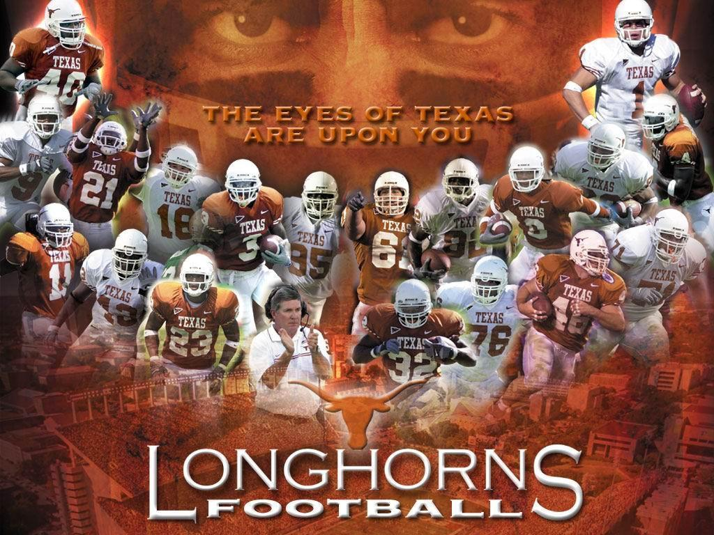

Longhorn Pride

The Texas Longhorns football program is the intercollegiate team representing the University of Texas at Austin in the sport of American football. The Longhorns compete in the NCAA Division I Football Bowl Subdivision as a member of the Big 12 Conference. Head coach: Tom Herman Claimed national titles: 4 (1963, 1969, 1970, 2005) Conference: Big 12 Conference football